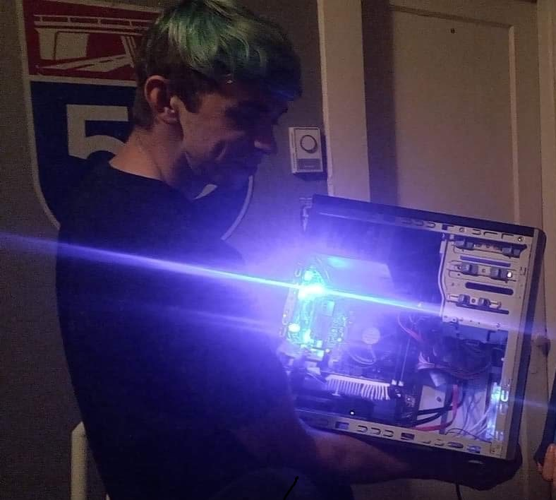
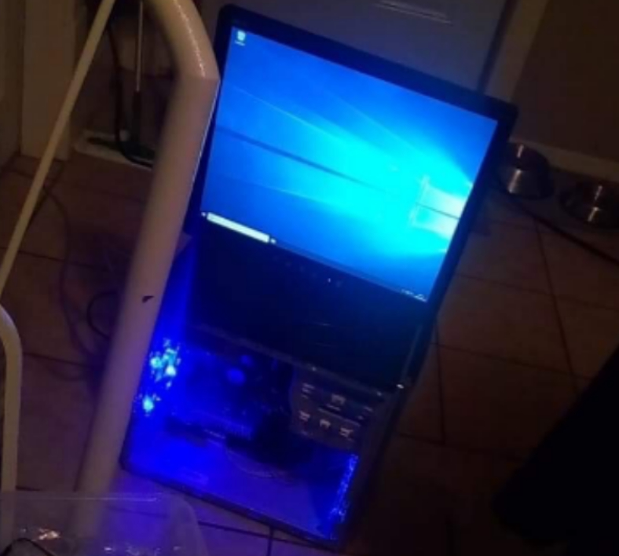

vorty.dev — pc shenanigans
"i will put you back together" - Freddy Fazbear
here you can scroll through my numerous pc projects. these are in a way logs of my crazy ideas.
el cheapo
by trying to build a decent computer out of old hardware laying around, i managed to create a machine capable of ripping a hole through space and time.
 project sentinel
how about we take an old desktop and make it portable? sure. let's put some motorcycle straps on there, what could go wrong? nothing did, apparently. pictures might give hardware nerds anxiety.
you'll have to imagine pics here for now.